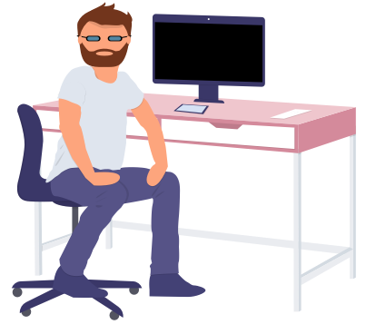

Hi, I'm Andrew
I’m a Software Engineer turned UI/UX Designer based in Bonn, Germany. Born and raised in Belfast, Ireland, I moved to Bonn, Germany in 2016 to expand my career opportunties on the continent. My current focus is User Experience Design for a number of customer facing products with the Deutsche Telekom.about
2009 - 2013
In 2009 I graduated from the University of Ulster (Northern Ireland) with a 1st Class Honours in Architectural Technology. 1 year later I graduated with a BA in Architecutre from the University of Lincoln. Despite these 2 disiciplines, and 2 years of experience working on projects such as the refurbishment of the Ulster Museum in Belfast, and a new Pharmaceutical Building for the Royal Victoria Hospital, I was still unable to gain paid employment in the UK Construction industry.
I ended up taking on the position of Kitchen Planner at IKEA in Belfast. After a fun and successful year of planning IKEA kitches, I decided to take advantage of working for such a multinational company and moved within IKEA to Austria - with the goal of learning the German Language and gaining employment on the continent. After a year in Austria, I held 2 positions in Germany - as a technical Consultant for Garaventa Lift in Cologne, and an Architectural Assistant at FSH Ingenieurplanung. Despite enjoying my time in Germany, I had learned that my studies would not be recognised by the German architectural authorities. So I had a choice - go back to Uni to start Architecture all over again, or learn something new.
2013 - 2016
I choose something new, a Masters in Software Development. I was suprised and motivated by how many of the methods and practices withing Software Development were similar to those learnt in my time in Architecture - instead of producing technical drawings, I was outputing lines of code (and sometimes UIs too!). The working world of IT is a different level than that of construction, with 2 months left of my studies I had already received several offers for a development job, I took a position at Liberty IT in Belfast - a development department of Liberty Mutual of Boston, America.
At Liberty I was placed on the Usability Team for a Commercial Insurance Product. I learnt a lot during my time at Liberty about Usability concepts, using the company's Style Guide and the Products already established patterns to continually improve on the service offered to Insurance Agents all over America. Despite the great team I had at Liberty, I always regretted moving away from Germany. I took my first official German lessons at the Goethe Institute in Dublin and started looking for my next position - with a short list of Bonn, Hamburg or Berlin.
2016 - present
I left the shores of Belfast for the second time in May 2016, heading to Bonn to start as a Java Developer for cronn GmbH. Cronn attracted me as it was a small company, and I had struggled at Liberty with the big company thinking and politics that come with it. My first project at cronn was a Web GUI for provisioning Software used by call center agents for the Deutsche Telekom. The project was replicated for several countries; I was mainly involved with the Netherlands, and Germany.
After a successful release of the initial application, including Accessibilty accrediation, a redesign to improve the general usability and to modernise the design for the next iteration of new features to the product, I was asked if I would like to take on a new challenge as a Designer for a small team to produce a Proof of Concept for a new product within the Telekom. I started the position of Team Designer in September 2017 and have remained in this position as the project has grown from 7 people to around 150 today. During this time, I have been able to pull from my experience right from the beginning of my architectural work, to what I learned on the Usability team in Belfast at Liberty IT, and including my front end experience gained as I developed the WebGUI project I started at cronn.
moonlighting

forkify
technologies
- JavaScript ES6
- Webpack
goals
- refresh JavaScript knowledge, learn and practice JavaScript ES6
- learn how to build and deploy a Webpack item
source
Github github.com/coderwurst/forkifyfind-me-a-spot Bonn
technologies
- JavaScript, HTML, CSS
- Webpack
goals
- access Bonn’s open APIs for parking spaces in and around the city
- responsive web app to show results
source
Github github.com/coderwurst/find-me-a-spot-Bonnruby-boardgames
technologies
- Ruby
- MongoDB
- mLab
- Heroku
- Material Design Lite
goals
- first experience with Ruby
- further practice with MongoDB and mLab
- deploy first web app with Heroku
source
Github github.com/coderwurst/ruby-boardgamesresume

cronn GmbH / UI/UX Designer
SEPTEMBER 2017 - PRESENT
Having been involved since the PoC Phase of my current item, I have gained a lot of experience in transitioning from a lone designer in a team of 8 people, to a SAFe item with over 10 designers and around 150 collaborators.cronn GmbH / Software Developer
JUNE 2016 - AUGUST 2017
Using the GWT Framework, I was part of a team responsible for a Web Interface used by the various regional branches of the Deutsche Telekom for the administration of provisioned SIM cards. My main responsibilities and duties revolved around Java, JUnit, Mockito, SOAP API and Selenium testing.Liberty IT / Associate Software Engineer
SEPTEMBER 2015 - MAY 2016
Worked with the Usability Team for Commercial Insurance Software to ensure a good experience for Insurance Agenta across America. Main responsibilites were Java, Struts, JQuery and JUnitEDUCATION
University of Ulster / MSc Software DevelopmentSEPTEMBER 2014
University of Lincoln / BA ArchitectureJune 2010
University of Ulster / BSc Architectural TechnologyJune 2009
DESIGN
HTML, CSS, JavaScript, Git, Webpack, React, Jawa, JUnit, GWTDEV
Sketch, Rapid-Prototyping, Invision, Illustrator, PhotoshopOTHER
Accessibility, SCRUM, Agile, SAFe, JIRACERTIFICATIONS
Accessibility: How to design for all (www.idf.org)Design thinking
(www.idf.org)
User Experience Design (www.coursera.com)
Deutsch B2
(Queen’s University Belfast)
Deutsch B1
(Goethe Institute Dublin)
Oracle Certified Java Associate